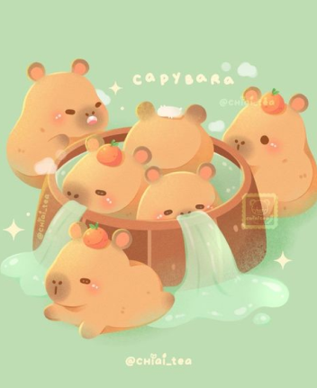

<ion-content>
  <div class="background-gradient">
    <div class="main-container">
      <div class="left">
        <h1 class="title">Test de nivel de estrés</h1>
        <p class="description">
          Para completar el registro responde las siguientes preguntas. En cada caso, por favor indica con total honestidad cómo te has sentido ante cada situación durante el último mes. Al finalizar podrás ver tu resultado.
        </p>
        <div class="action-button">
          <ion-button expand="block" class="register-btn" (click)="navegarEncuesta()">
            Continuar
          </ion-button>     
         </div>
      </div>
      <div class="side-image">
        
      </div>
    </div>

  </div>
</ion-content>
